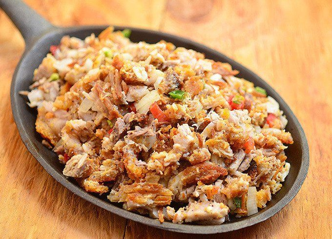

My Favorite dish
PORK SISIG

Pork sisig is a popular Filipino dish. It can be considered as a main dish or an appetizer. The composition of this dish is mainly of pig’s parts such as minced pork meat, ears, and face. Chicken liver, onions, and chili peppers are also added.
Sisig originated from Pampanga. This place is considered as the culinary capital of the Philippines. It was invented by Lucia Cunanan. She is popularly known as Aling Lucing and the Sisig queen.
The US military bases located in the town might have played a role in the invention of this dish. People can buy cheap
pig heads in commissaries because these are not normally consumed inside the base. Meat from the pig heads are scraped
out, boiled, grilled, and made into what is now known as Sisig
INGREDIENTS
- 1 lb. pig ears
- 1 1/2 lb pork belly
- 1 piece onion minced
- 3 tablespoons soy sauce
- 1/4 teaspoon ground black pepper
- 1 knob ginger minced (optional)
- 3 tablespoons chili flakes
- 1/2 teaspoon garlic powder
- 1 piece lemon or 3 to 5 pieces calamansi
- ½ cup butter or margarine
- ¼ lb chicken liver
- 6 cups water
- 3 tablespoons mayonnaise
- 1/2 teaspoon salt
- 1 piece egg (optional)
RECIPE
- Pour the water in a pan and bring to a boil Add salt and pepper.
- Put-in the pig’s ears and pork belly then simmer for 40 minutes to 1 hour (or until tender).
- Remove the boiled ingredients from the pot then drain excess water
- Grill the boiled pig ears and pork belly until done
- Chop the pig ears and pork belly into fine pieces
- In a wide pan, melt the butter or margarine. Add the onions. Cook until onions are soft.
- Put-in the ginger and cook for 2 minutes
- Add the chicken liver. Crush the chicken liver while cooking it in the pan.
- Add the chopped pig ears and pork belly. Cook for 10 to 12 minutes
- Put-in the soy sauce, garlic powder, and chili. Mix well
- Add salt and pepper to taste
- Put-in the mayonnaise and mix with the other ingredients
- Transfer to a serving plate. Top with chopped green onions and raw egg.
- Serve hot. Share and Enjoy (add the lemon or calamansi before eating)